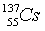
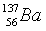
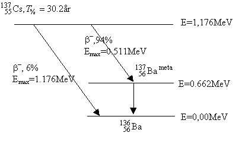
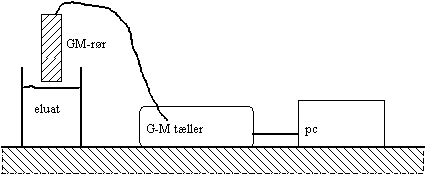
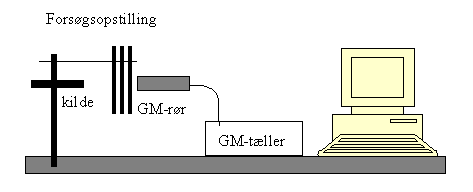
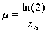
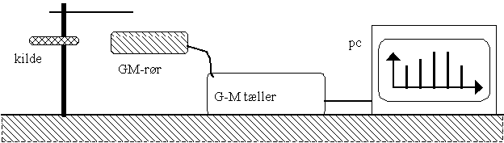
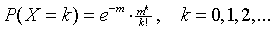
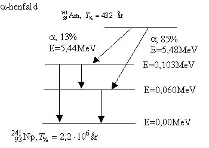
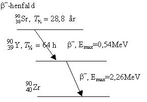

Denne vejledning indeholder:
Formålet er at bestemme halveringstiden og henfaldskonstanten for henfaldet af en eksiteret bariumisotop.
Minigeneratoren er en radioaktiv kilde, der indeholder den langtlevende cæsiumisotop

med halveringstiden T½ = 30,2 år. Henfaldsdiagrammet er vist nedenfor. Det ses, at 137Cs for 92%'s vedkommende henfalder til en eksiteret bariumkerne, 137Ba. Denne metastabile kerne henfalder, med kort halveringstid, under g-udsendelse til den stabile
. Det er g -strålingen fra dette sidste henfald vi registrerer med Geiger-Müller røret.

MINIGENRATOREN malkes for  ved at presse ca. 5 ml
elueringsvæske (0,04 M HCl i 1% NaCl) gennem MINIGENERATOREN.
Eluatet opsamles i et lille bægerglas.
ved at presse ca. 5 ml
elueringsvæske (0,04 M HCl i 1% NaCl) gennem MINIGENERATOREN.
Eluatet opsamles i et lille bægerglas.

Forsøgsopstilling
GM-røret opspændes lodret lige over væsken. GM-tælleren (med serielt interface) forbindes til pc'en. I programmet Datalyse vælges den pågældende tæller, dernæst vælges »Counting, Thalve«. Måletiden indstilles til 10 sekunder.
Sæt tælleren i gang før MINIGENERATOREN malkes, så målingerne kan starte straks efter malkningen. Der tælles i 5 til 6 minutter. Herefter fjernes reagensglasset og indholdet smides i vasken. Er det forsvarligt!?
Mål herefter baggrundsstrålingen, f.eks. i 10 minutter og omregn til pr 10 s.
Baggrundsstrålingen kan fratrækkes som søjleoperation i tabellen i Datalyse.
Bemærk, at første måling fra 0 s til 10 s afbildes til tiden t1 = 5 sekunder, osv...
De korrigerede tælletal er proportionale med væskens aktivitet. Kun en del af g -strålerne fra væsken rammer GM-røret, og GM-rørets effektivitet over for g-stråling er kun ca. 1%.
Afbild de korrigerede tælletal som funktion af tiden t og vælg logaritmisk 2.akser. Ud fra formlen for aktiviteten A = A0·e-kt forventes en ret linie. Bestem halveringstiden T½ vha. grafen. (benyt lineær regression).
Udregn herefter henfaldskonstanten k.
Den semilogaritmiske afbildning bliver ikke en perfekt ret linie. Hvorfor ikke?
Lav en skitse af GM-rørets indre og forklar hvordan det registrerer g-stråling.
Beregn g-strålingens bølgelængde og frekvens.
Tabelværdien for halveringstiden er T½ = 153 s.
Når g-stråler passerer et stof, svækkes strålingen pga. fotoelektrisk effekt, comptoneffekt og måske pardannelse. For at halvere strålingens intensitet skal den passere gennem adskillige cm aluminium eller flere mm bly. Ved gennemgangen svækkes strålingens intensitet eksponentielt med tykkelsen x af det passerede stof:
I = I0·e-mx,
hvor I0 er den usvækkede strålings intensitet og svækkelseskonstanten m afhænger af stoffets Z-værdi og af g-strålingens bølgelængde (energi).

Opspænd GM-røret og g-kilden,
således at afstanden fra kilde til rør er ca. 10 cm. Mellem
røret og kilden anbringes 2 mm tykke Pb-plader lige foran GM-røret. Bestem absorptionsslagets
tykkelse x (brug skydelære) og
strålingens intensitet I (korrigeret for baggrundsstråling, som
du har målt i forsøg med halveringstid). Målingerne foretages
vha. programmet Datalyse. Samme opstilling som i foregående
forsøg. Her vælges blot »Counting (xhalve)« i menuen.
| tykkelse x / mm | tælletal I / pr 60 s | korrigerede tælletal Ikorr |
0 |
||
|
|
|
|
|
|
Tabellen kan se ud som ovenfor. Du fratrækker baggrundsstrålingen som en søjleoperation. Dernæst vælger du Funktioner, Graf i tabellen og tegner en graf over korrigerede tælletal som funktion af tykkelsen.
Afbild Ikorr som funktion af x på semilogaritmisk papir. Tegn den bedste rette linie og bestem halveringstykkelsen x½.
Beregn absorptionskoefficienten

Find vha. en graf for absorptionskoefficient som funktion af Energien af g-strålingen i Datahåndbogen ud af, hvilken svækkelsesform der er den væsentligste for g-strålingen. g -strålingens energi er E = 0,66 MeV.
Med samme opstilling som i foregående forsøg, blot uden blyplader måles GM-rørets karakteristik. Anbring G-kilden tæt på røret for at få en tilpas stor tællehastighed.
Skru helt ned for spændingen over GM-røret. Skru op indtil røret begynder at tælle og skru så lidt ned igen.
Mål nu sammenhørende værdier af GM-spænding og tælletal. Tælletiden kan fx være 10 sekunder.
Afslut målingerne, når GM-spændingen ikke kan skrues højere op - eller når antallet af tællinger stiger voldsomt efter at have være konstant over et stort spændingsområde.
Afbind aktiviteten som funktion af GM-spændingen. Indstil herefter spændingen til en værdi midt på plateauet.
Formålet er at bestemme middelværdi og spredning for tælletal fra et Geiger-Müller-rør, der måler på en radioaktiv kilde med (næsten) konstant strålings-aktivitet (der er tale om g -henfald af den eksiterede Ba-137*. Halveringstiden for kilden er 30.1 år. Der tælles i et stort antal tidsperioder af samme længde.
Desuden skal den målte fordeling af tælletal sammenlignes med den tilsvarende Poissonfordeling (med samme middelværdi som de målte tælletal) - se senere!

Forsøgsopstilling
g-kilden anbringes i kildeholderen (se opstilling). GM-røret anbringes så nogle cm fra kilden, se figuren.
På pc'en vælges programmet Datalyse. I programmet indstilles G-M tælleren til at tælle i en passende valgt tidsperiode. Vælg 1 sekund, ellers bliver du ikke færdig i timen. Du skal måle i lang tid! Hvor længe kan du jo overveje mens du måler.
Efter hver tidsperiode sender tælleren tallet til pc'en, nulstilles og tæller videre.
På pc'en optælles hyppighederne for de indkommende tælletal - og samtidig tegne stolpediagrammet med hyppighederne på skærmen.
Udskriv grafen og en tabel med tælletal og hyppigheder. Bemærk, at Datalyse beregner middelværdi og spredning for de målte data. (se dem i memoen).
Besvar følgende spørgsmål (vis ved beregninger i rapporten)
Desuden skal du beregne kvadratroden af middelværdien m
og sammenligne denne med spredningen s. Kan du på denne
baggrund acceptere følgende postulat:
»Spredningen på tælletal er ca. kvadratroden af (middelværdien af) tælletallet«
Poisson-fordelingen med middelværdi m er givet ved følgende sandsynligheder:

hvor X er den stokastiske variabel, der som værdimængde har tælletallene 0,1,2,...
Poissonfordelingen fremkommer som følge af, at de registrerede henfald forekommer på fuldstændig tilfældige tidspunkter. Dette er igen en følge af, at det er umuligt at forudsige, hvornår den enkelte atomkerne vil henfalde: hver atomkerne har en bestemt henfaldssandsynlighed pr tidsenhed, og denne er uafhængig af, hvor »gammel« atomkernen er. Der er altså tale om en ægte stokastisk proces!
Poisson-fordelingen kan fås som grænseværdi af
Binomialfordelingen b(n,p), hvor
middelværdien m = n·p fastholdes under
grænseovergangen n gående mod uendelig. Spørg eventuelt
din matematiklærer!
De tre radioaktive kilder er fremstillet af Risø, og er beregnet til undervisningsbrug. Kilderne er ufarlige, men følgende sikkerhedsregler skal overholdes:
a-kilden: denne indeholder Americium-241. Americium forekommer ikke i naturen. Am-241 blev første gang fremstillet kunstigt i 1944 vha. den store cyklotron i Berkeley. Am-241 udsender a -partikler (5,5 MeV) og blød g-stråling (0,060 MeV). T½ = 432 år.
|
 |
 |
b-kilden: denne indeholder strontium-90, der fremstilles i store mængder fra atomreaktorers brændselselementer. Sr-90 omdannes ved en b-udsendelse (Emax = 0,52 MeV) til yttrium-90, der ved en ny b -udsendelse omdannes til zirkonium-90. b-partiklerne fra yttrium har en maksimal energi på 2,26 MeV, og det er disse partikler, man måler, idet partiklerne fra strontium absorberes i plexiglasset. Halveringstiderne for de to henfald er henholdsvis 28 år og 64 timer.
g-kilden: denne indeholder caecium-137, der ligesom stontium-90 fremstilles ud fra atomreaktorers brændselselementer. Cs-137 udsender både b- og g-stråling, og kilden er derfor omgivet af et plexiglaslag, der absorberer b-strålingen. Halveringstiden er 30,2 år.
Se henfaldsdiagrammet i starten af vejledningen.